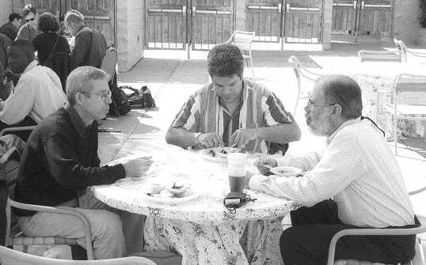
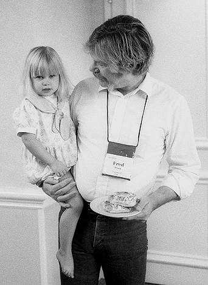
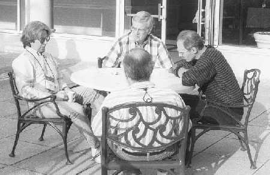
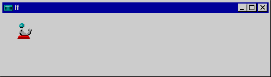
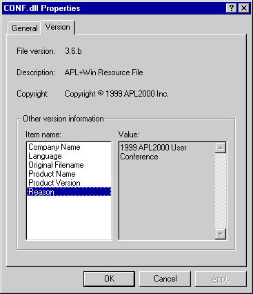
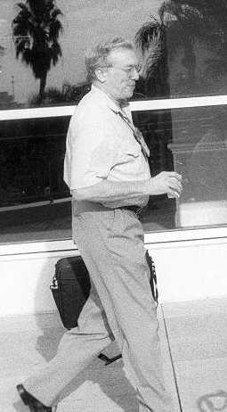
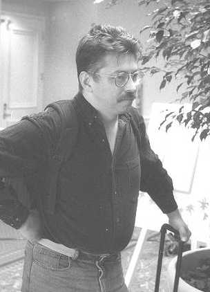
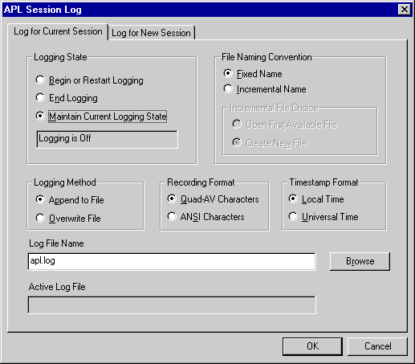

APL2000 at Orlando
Vector 16:3, page 58
Background¶
This was the second time I have been fortunate enough to visit the APL2000 users’ meeting; the organisation was as slick as ever, the attendance was excellent (comfortably over 100) and the atmosphere was strongly positive. It bothers me a little that the ‘official’ APL summer gathering seemed mostly interested in Graphpak retrospectives, with very little leading-edge development work to interest the next generation. By contrast, this vendor-run event was remarkably forward-looking – many of the talks were of general technical interest and you felt that this was a young crowd who were doing some seriously exciting stuff with the Internet. What’s more they were willing to share ideas which were early in development, but could well be out there as products this time next year.
Venue¶
Orlando in November is an ideal US target for Europeans as well as Americans. The climate is friendly (cool and clear in the mornings and evenings, high 20s over the middle of the day), and flights are cheap. The hotel was simple and functional, although the room prices were a little steep at $119 per night for something which was basically a vertical motel with a conference centre strapped on the side.
The layout of the meeting rooms was good – we had three adjacent rooms with a central area for coffee breaks where you could easily wander out of doors and sit around under the palm trees for a chat. The projection equipment was ever-present and worked first time, every time. As usual, almost no presenters had tested their sessions on a real audience, and the hopeful cry of “can you increase the font size please ....” was heard more often than it should have been. I can’t comment on the social programme – on a trip this short I try to stay close to my natural time zone, so my early-to-bed and up before dawn regime cut me out of the LaserQuest outing and the Chinese meal.
Training Day One¶
I think about 40 people attended the four training sessions - I spent the day with Gary Bergquist learning about ZarkWin, but there were also sessions from Ray Polivka (an Introduction to APL), Rick Butterworth (APL Gui Programming), Patrick Parks (COM objects) and Fred Waid (APL on the Internet). Any of these would have been good value.
Gary Bergquist on ZarkWin¶
I went to this talk a little puzzled about the claim that I would receive “software worth $7,500 completely free” if I attended. Was the price a misprint? No, as Gary explained “I put an outrageous price on it because I have no interest in selling it! This was not built to sell, it was built because I would die without it”.
Gary’s major line of work is in bringing APL+DOS systems over to Windows – this means generating lots of rather simple forms in a short time. He quickly discovered that what took him minutes in DOS could take weeks in Windows, and that “⎕WI was way too painful” for this kind of work. Interestingly, he started out by trying to build a toolkit which worked in the same way as his DOS tools for driving ⎕WIN – this failed as he realised it would be cheating the user, and if you really wanted to go down this road it would be far better just to make a ⎕WIN emulation and leave the system with a DOS look and feel.
The next cut took 9 months, it was much better, and at the end of that time he again threw it away and started over. In the light of the inventors’ motto “It takes three times” the third cut can evolve and grow because the basic design is right. Gary has kindly agreed to let Vector run his tutorial as a complete article, so rather than repeating what he says, I shall just add a few notes on what I found most interesting about his approach, and leave it at that.
-
like Causeway, he keeps the form definition in a nested data structure and has a design function to update it. Like Gary, I find it hard to see how you would do it any other way, and yet there are major production systems out there with massive ‘build’ functions which are just reams and reams of
⎕WI 'New'code with wired-in numbers for the position and size. -
all the ‘objects’ Gary allows you to add to the base form are defined by custom classes by functions such as
zw∆Buttonswhich has all the stuff necessary to make and manipulate a ‘button group’ object. His designer simply trawls the workspace for things with the right sort of type and name and offers these to you. It is fascinating how PlusWin programmers have learned to live without namespaces! The trick is simply to treat a function as a namespace, using the right argument as the ‘function’ so you end up with either a huge Select-Case structure or in Gary’s examples, lots of lines like: -
What I find interesting here is that this apparently horrible kludge does have some advantages - you can top and tail this function with common code very easily, and it puts all the rats in one trap which moves easily out to file, has a single timestamp and so on. I can see why the PlusWin world is not crying out for namespaces - if you already have a function-based filing system, the last thing you will want to face is the prospect of adding in the extra level of complexity needed to walk the namespace tree to look for everything changed today, and so on. The addition of control structures (and now of bookmarks in the editor) makes finding your way around 400-line functions quite bearable, so the kludge is not quite so kludgy after all.
-
Gary’s approach to form design is very novel and quite fascinating. He gives you almost no direct control over the positioning of objects, and things like labels determine their own size from the font and text. What you set is the relationship between objects, using a very powerful set of alignment and spacing constructs so you can say ‘A is centered below B which is to the right of C ....’ and so on. Objects can be put in groups which are part of other groups and so on, so once you get a feel for laying out forms with these rules you can make basic data-entry forms very quickly. What is more, the rules are re-evaluated on resize of the main form (assuming at least one of the objects was sensitive to form size) so you get very effective resize behaviour – way beyond anything you can do in DyalogAPL with the ‘Attach’ property.
-
This approach solves two horrid problems, only one of which Gary was aware of! The first one is ‘large fonts’ – people who run your application on big screens with a big font size. His forms just cope! The second one is translatability – someone translates your application into Finnish and on average the text labels get 50% longer ... he copes magnificently with this one too and he didn’t even realise! The final advantage of using a rule-based design strategy is that if you want to push out HTML forms you traditionally do it with tables, putting the various input fields into table cells and using colspan to get rough control over width. Of course you can cheerfully nest the tables, so groups of controls typically end up in deeply nested tables – this fits so beautifully with Gary’s rules that I could see his designer as an excellent starting point for an HTML forms generator!
Watching the audience reaction to all this, I fear Gary may be crying in the wilderness. I can see the merit of what he is doing, and so will anyone else who is faced with converting 100 forms in a week, or not getting paid! Those of his audience who had not yet had to face up to this kind of pressure clearly were itching to get hold of the radio group by the corners and drag it across a few pixels, line those buttons up just there .... and so on. I think he is right - these metaphors are not for mixing .... but if I can sneak some of his automatic alignment rules into the Causeway designer without treading on its purely visual approach, I will certainly have a go.
Conference Day One¶
This ran pretty solidly from Eric’s welcome at 9:00 to the end of the closing session at 6:15. My only regret was that there was only one of me, so it was a matter of chasing around in the coffee breaks and getting presenters to promise to send us their talks for Vector. I also managed a few previews or postviews on the balcony over a doughnut or lunch.

Eric Lescasse chatting with Bill Rutiser over an outdoor lunch
Jim Sinclair - using APL at Cognos Corporation¶
For those of you who have been asleep for the last year, after various false starts, Lex2000 and the associated APL business were acquired by Cognos Corporation early this year. Lex2000 has been re-badged and updated as “Cognos Finance” and APL+Win is now in serious use as a development tool elsewhere in the Cognos product set.
Jim Sinclair is a VP in development, so he is both a user of APL and to an extent the link from the APL2000 group into the Cognos management structure. He gave us an interesting history of the company, and of his role in it – he also offered some very useful (and possible controversial) observations on the relative merits of APL against other development environments.
He first met APL at the University of Waterloo, then left it for 25 years to work in system development in a variety of ‘conventional’ languages. He again became interested in APL as a development tool when Cognos began to explore extending their product range towards the financial consolidation and budgeting areas. He quickly became aware that many of the market leading applications seemed to be written in APL – perhaps this was no accident? He started out with IBM’s APL2 (because IBM had to be the best, and he knew no better), gave up on it rather quickly and bought a copy of Dyalog APL instead. Having used this to build some prototypes, he investigated Lex2000 which turned out to be written in this other APL ... ! He attended the APL2000 conference in 1998 and found it hard to swallow some of the things which were being claimed about the language. Never mind – Cognos bought Lex2000 and Jim now mostly works in APL+Win.
Having run through the history (and some very amusing corporate videos), Jim expanded on his personal experiences with APL. Clearly, having an experienced C++ developer (who also knows Dyalog APL) as both user and owner has been a serious kick up the rear-end for the +Win group – you can already see the consequences feeding through in the new code-walker and in a variety of simple and well-overdue improvements in the environment. Here are some of his comments:
- debugging – compared with C/C++ debugging in APL is a darn sight easier than in any other language we use. I used to like the Dyalog debugger better, but now I like CodeWalker.
- implementing math algorithms – it seems to work right first time!
- stability – I’ve used Microsoft products for years and years and they blow up. This blows up too, but not very often.
- support – in all the years of working with Microsoft support, I’ve never talked to a real person. APL2000 have been very good at getting stuff into the product (for example to make MDI work as it should) that I felt was really necessary.
- development environment – OK, but plenty of other stuff competes very well.
- programmer productivity – I don’t think that APL is any more productive than C++. It depends more on who you have and what you use it for. If you are working in the right sweet-spot for the language, you are very productive.
Naturally the last comment drew a fairly strong audience reaction! I think I agree with him (stand by for mass burning of Vector by APLers the world over) ... I have a bunch of little C programs that I use for things like generating FTP scripts from all the files I touched today. I use an ancient command-line C compiler and simple text editor and I am definitely more productive with these tools than I would be trying to hack this stuff out in APL. Watching Richard (age 16yrs, APL experience approx 13yrs, Java experience approx 18 months) develop simple multi-user TCP/IP games in APL and in Java, I reckon he is at least as productive in Java as in APL. In particular the Gui development tools (as shipped by any of the APL vendors) are light-years behind Delphi-5, J-Builder or Visual Basic.
Some of Jim’s dislikes were:
- writing Gui code – atrocious – I don’t like the process. I tried some of the screen painters – it was like being back in Windows2 – give me C++ or VB! The resulting Gui application is not as good as applications built in other Guis – e.g. in +Win 3.0 you couldn’t build an MDI form that behaved in the right way.
- data modelling – used to having this in the environment and having it build the code for you.
- performance – you can’t get APL to sing like C++.
- memory management – in C++ 90% of your bugs are in here. In APL you have no control over it (but no bugs).
Top of his list of ‘want to see’ was “a sans serif APL font that actually looks good”. This is a tough one! APL2741 has probably run its course, but getting a fixed-pitch font to work well both on screen and paper is not easy. Adam Kertesz showed a rather nice one called Andale Mono in his talk later that morning, but of course it had no APL symbols in it. I will keep playing with APLSans until it looks right – comments welcome on the readability of the code in Hackers’ Corner in Vector 16.2 which uses it.
Breakout Sessions¶
I was lucky to get my own talk out of the way early, which also gave people time to catch me later on in the conference. However I missed out on two papers on porting mainframe applications, which was a great pity as both papers were well-written with lots of pragmatic advice.
We then had a very nice talk from Mark Osborne on how floating-point calculations can produce surprising results when you push ⎕PP to the limits. I particularly liked his ‘measuring-rod’ analogy – say you are trying to report the length of a sheet of paper and you have a set of 5 rods in the ratio 1 : 1/2 : 1/4 : 1/8 : 1/16 : 1/32. The snag is that you are only allowed to use a consecutive set of 3 rods, so you report your length as (index into the set),(3-element boolean) for example 2,1 0 1 would be 5/8. Clearly you can do addition and multiplication in such a system of measurement, and clearly you will rapidly generate inaccuracies. Now imagine that you are allowed to pick 53 contiguous rods from a set of (say) 1024 and you have all the same problems, just pushed a little further to the right of your boolean vector. Well, this is just what the IEEE floating-point specification (as implemented by the Intel FPU) is doing, so now you can see why things don’t always come out as you expect.
After lunch I had a hard choice between John Walker on getting CD album titles over the internet, and Bill Rutiser on the inner secrets of Unicode. I hope John will let us run his paper in Vector (along with all the code) as it looks like a really good practical education both in multimedia and in basic Internet techniques. Bill’s talk attempted to traverse a hugely tricky subject and unfortunately he ran out of time before he ran out of material. I spent nearly 2 hours with him on the final day, and left Orlando with a great deal of precious knowledge (and the full table of where all the APL symbols are in the Unicode bible) which I could not have acquired any other way. It would be good to see this material written up one day, but I have to admit that fonts are something of a minority interest.
 |
Finally, I went to see Fred Waid who is responsible for the www.openhere.com portal, which is driven entirely by APL+Win. I left feeling just a touch uneasy about the technical tricks needed to get NT to kick off APL as a process, and the way this was backed on to Microsoft IIS – but very convinced by Fred’s argument that when you want to write ‘neat stuff’ on the client side APL is a superb environment to build in. This is particularly true for applications like spiders – increasingly these are being written for clients who are using them to watch competitor’s sites or to get the best moment to bid in on-line auctions. The competitors soon get wind of this and start to take defensive measures, maybe simply changing the format of the site to confuse the spider. With APL you stand a chance of rewriting the spider nearly as fast as they reformat the site! I would like to be equally convinced about the server-side, but I have yet to see the ‘killer app’ that APL excels in. OK, you can write a great chat-room in APL, but is it really that much more productive than C++ here? Time will tell. |

Chris Lee (SoftMed, left) and friends between sessions
Conference Day Two¶
One of the really nice touches about APL2000 conferences is that they give you breakfast! This gets everyone assembled early and is yet another opportunity to chat to APLers in pleasant surroundings. Eric’s introduction to the day was followed by Don Segal of SoftMed Systems, and then another run of parallel sessions.
Don Segal - Building a Company on APL¶
Don is President and CEO of the biggest and most successful medical-records company in America. He is in the rather unique position of having originally attacked the problem as a user, and gradually evolved from a set of solutions which fulfilled his needs to the much more generic and scalable solution which makes a successful product. His recipe “understand what the user wants better than the user” was essential, as his users are typically cogs in a vast machine and have little control over the system as a whole. Rival products were based on asking the users what they needed – they invariably creaked at the second site and failed soon after under the weight of ad hoc patches. “We saw a lot of competitors having to keep customising from client to client – when you reach 50–60 clients you are in quicksand.” Don also observed “The software business is not as easy as a lot of people seem to think – the product must be designed to give leverage and be generic across scales”.
He actually started on the IBM 5110 “It switched to APL first, so I used that. I couldn’t spell, so I never used BASIC – a good business decision I think!”. This marvellous old machine ran a production system for 5 years on the 5" monochrome screen. From here he made steady progress in understanding the problem and developing generic solutions which gradually gained acceptance in the medical records business. It was interesting to hear his views on the dangers of going to market with a badly designed solution “When you sign up clients your problems begin – if your design is weak the support can eat you alive”. It was also interesting to get a slightly different perspective on the productivity balance between 15 APLers and 9 C++ developers in his group: “On balance we get a factor of 3 between the groups. We have one product in FoxPro – with lots of clients – that product is terrible – it still cannot do what we wanted it to do. It will be replaced with APL and SQL even though 150 clients will need to be moved to the new platform as a result.”
Breakout Session - morning¶
Using a Resource DLL Compiler – Brian Chizever¶
Fortunately for me, Brian re-ran his earlier session on using a resource DLL compiler to make a simple-to-ship collection of icons, bitmaps and sounds for use in a runtime +Win 3.6 application. This was one of those sessions which was just plain useful, and came with a nice freeware resource compiler and linker to make it easy to use in the comfort of our own portables. The following notes are more or less as I took them down during the session, with minor corrections to bring them into line with his PowerPoint slides.
Brian sharing the front desk with Sonia Beekman
I think Brian had the easiest selling job of anyone at the conference – external resources are a major pain with any Windows system. You can quickly accrete a huge collection of icons, little bitmaps, cursors and maybe even special sounds. These make it very hard to deliver your application without key elements going missing, or just reverting to the ‘placeholder’ set that you drew in a hurry 6 months ago. On balance I feel it is always better to have Windows construct these for you, rather than taking the DyalogAPL option of storing them in the workspace as numeric arrays (for bitmaps and icons) and creating the objects directly from these. By having Windows manage them you save on workspace (the memory is allocated externally), and you will have fewer problems with colour maps, changes to the object format (e.g. animated cursors) and so on.
What Brian suggested was ‘putting all the rats in one trap’ by compiling all your resources into a single DLL and using this as the source for the APL Gui. This technique also prevents the end-user fiddling with your icons and generally changing the style of the application in unexpected ways. He started by illustrating a selection of ways for setting the ‘icon’ property of your main form:
This sets ‘basket.ico’ as the small icon in the top left of the form, and it also appears in the ‘Alt-tab’ selection panel and on the taskbar. A more interesting choice might be any of ...
The top line simply picks up the default icon from the notepad application – it does not need an explicit directory as Notepad resides in the Windows directory which is always on the search path. The second line is more explicit – it requests the second icon resource from the same .exe file. If you check out your start-menu shortcut to Notepad you will indeed find that it is hiding two icons in there! Another example might be:
You can also set the ‘pointer’ of the form in a very similar way, for example to have an extremely silly seal bouncing a ball on his nose:

Sounds are a little more complex, as you first have to load the DLL into memory and get its handle:
⎕←L←⎕WCALL 'LoadLibrary' 'conf.dll'
27787264
⎕wcall 'PlaySound' 'cat' L 'snd_async snd_resource'
1
⎕WCALL 'FreeLibrary' L
... or you can do it the easy way from a sound file if you prefer (1=async):
N.B. Don’t try this one in the airport lounge on the way home!!
Having whetted our appetites with a rather nice spinning globe and a barking dog, Brian continued by taking us through the process of making our own resource DLL complete with icons, cursor, sounds and so on. By the end, anyone with a portable on their lap had a working CONF.DLL with an assortment of new odds and ends included – this makes for a very satisfying workshop as you can be pretty confident that it will all still work when you get home.
Basically this is a 3-stage process:
- Combine your assorted icons and bitmaps into a single resource file. This is done by writing a script (typically called a .RC file) and running it through a resource compiler to make a .RES binary file. A freeware compiler was included on the conference diskette.
xx.RC + (xx.ICO xx.CUR ... etc) ========> xx.RES - Generate a stub of compiled object code (probably a tiny C program that does nothing) – Brian kindly provided a suitable one called CONF.OBJ
xx.C ==========> xx.OBJ - Run a linker to strap the output from stage-1 on the back of stage-2 to make a functional DLL. Again, a freeware linker was included.
xx.OBJ + xx.RES ==========> xx.DLL
The entire process can easily be automated with a simple batch file. Here are the first few lines of Brian’s CONF.RC file ...
Comments have the usual C++ style and blank lines are ignored. The ‘live’ entries give either a number or a name to the resource, the resource type and the path to the actual resource file – note the doubled backslashes here.
//
// Sound Files
// a bug in ALINK.EXE 1.6 drops the first letter of any
// resource with a resource type "WAVE"
//
xCAT WAVE "pics\\cat.wav"
xDOG WAVE "pics\\dog.wav"
Brian even documented the bugs in the supplied freeware compiler! The final section of the script sets up the information which Windows will show in the property sheet for your DLL:
1 VERSIONINFO
FILEVERSION 3,6,0,0 // your file version (returned by ]DLL)
PRODUCTVERSION 3,6,0,0 // your product version
FILEFLAGSMASK 0x3fL // which FILEFLAGS are valid
FILEFLAGS 0x0L // 0=normal, else debug, private, etc
FILEOS 0x40004L // VOS_NT_WINDOWS32
FILETYPE 0x2L // DLL
FILESUBTYPE 0x0L // no sub-type
BEGIN
BLOCK "StringFileInfo"
BEGIN
BLOCK "040904b0"
BEGIN
// these entries appear at the top of the property sheet from explorer
VALUE "FileVersion", "3.6.b\0"
VALUE "FileDescription", "APL+Win Resource File\0"
VALUE "LegalCopyright", "Copyright ⍝ 1999 APL2000 Inc.\0"
// All remaining entries appear alphabetically in the listbox at the bottom
// of the property sheet. Add as many as you need.
VALUE "CompanyName", "APL2000 Inc.\0"
VALUE "OriginalFilename", "resource.dll\0"
VALUE "ProductName", "APL+Win\r\nResources\0"
VALUE "ProductVersion", "3.6\0"
VALUE "Reason", "1999 APL2000 User Conference\0"
END
END
BLOCK "VarFileInfo"
BEGIN
VALUE "Translation", 0x409, 1200
END
END
He recommended leaving the upper entries alone (except for your product version) and adding any useful documentation to the lower set. Note that all the strings are ‘null terminated’ in good C fashion and you may use \r\n to insert newlines here. To run this, you need a good ol’ DOS prompt (yes, it does still exist):
D:\ARCHIVE\APL2000\resource>gorc -r conf.rc GoRC.Exe Version 0.53 - Copyright Jeremy Gordon 1998/9 Output file: conf.resThis generates as output a file called conf.res, which can then go through into the linker:
D:\ARCHIVE\APL2000\resource>alink -oPE -dll conf.obj conf.res ALINK v1.6 (C) Copyright 1998-9 Anthony A.J. Williams. All Rights Reserved Loading file conf.obj Loading file conf.res Loading Win32 Resource File matched Externs matched ComDefs Generating PE file conf.dll Warning, no entry point specified
The final warning is fine – this DLL doesn’t do anything, and the linker thought it ought to tell us! A quick check in Explorer proves Brian wasn’t lying!
 |
That really is all there is to it. As a final check we can copy the updated DLL over to our working directory and use one of those icons on the main form:
'ff' ⎕WI 'icon' '>ICO CD conf.dll' Note the use of a name, rather than a number here – this makes things fairly self-documenting. Brian did point out one annoying difference between Windows95 and WindowsNT – NT orders icons as they appear in the .RC file, whereas 95 orders them alphabetically. Simple enough to work around ... just be sure to arrange them alphabetically in your resource script and then they will both behave the same. As I said at the start, it all just works, even back in the cold, dark UK. Many thanks for a most useful 40 minutes. |
Breakout Sessions – afternoon¶
After lunch it was a hard choice between Carl House on a toolbox for generating a fully cross-indexed website, Warren Baelen on ADO and Patrick Parks on interfacing to commercial code-management systems such as Visual SourceSafe. All these were well-covered in the proceedings, so in the end I went to find out about ADO, how it is taking over the role of ODBC and how to drive it from APL. Again, this was a helpful talk with all acronyms well explained, and again I hope we can cover it in detail in a future Vector – there was far too much detail to include here.
 Carl House in a hurry! |
 Patrick Parks |
The next session was an interesting case-history, related by Colyn Phillips – the Gui dialogue in the +Win options screen which controls the session log files. This was partly about Gui design, but looking at this from the outside I felt it was more about trying to put a brave face on a piece of over-designed functionality. It is trying to cope with the problem of two concurrent APL sessions both logging at the same time. Dyalog simply duck (sic) the problem – last one out saves the log! More realistically you name the logfile in your shortcut so you have one file associated with each workspace.
In +Win you have a wonderfully confusing set of buttons to press, spread over two almost identical tabs ...

One day I may find out how to work it – then again I never did work out how to operate the old debugger, always resorting to the standard APL hack of inserting lines of dominos to make things stop where I wanted them to. Hopefully the same command-line approach will work here too so I can be selective about which workspaces I log and where.
The last session I attended was from Chris Lee of SoftMed which was mostly about code-management, utilities and development philosophy. Again, I was struck by the fact that introducing namespaces to these systems could cause more problems than it would solve. The day closed with a talk by Luis Caro on APL in the Columbian banking system. I am sorry to report that by now I was too brain-dead to attend, so if anyone took good notes here, it would complete the picture nicely to have them.
Training Day Two¶
The conference closed with a final tutorials day – I think around 30 people were still around to the end, although some of them were probably just kicking about waiting for flights home. I grabbed Brian Chizever’s notes on ⎕WCALL which have an excellent coverage of the common Windows calls you might need from APL. I also had an excellent impromptu tutorial from Bill Rutiser on a Russian-built package called FontLab which actually seems to understand the TrueType font format, unlike Fontographer which just presents page after page of meaningless options with no help whatsoever on what they do. I am now a little more hopeful of being able to make an APL2741 font that works correctly in the majority of modern web browsers, as well as in Word documents and APL sessions!
Other sessions on offer were from Rick Butterworth (using the complex classes like ListViews, and running APL+Win as an ActiveX object); Eric Baelen on driving Excel from an APL+Win application, and Eric Lescasse on his APL+Win 3.5 object collection. This is a library of over 70 custom classes which have been built using the new user-defined objects capability.
Wrap-up¶
If you can take time out round about the 3rd week of November next year, this looks like a very worthwhile trip. Even if you mostly develop in some other flavour of APL, you can benefit from most of the ideas and it really helps to have some of the general enthusiasm rub off. As Eric said in his opening address, when you go back home and start working, it often feels like you are the only one left. Getting together with a bunch of like-minded APLers is an essential part of keeping the flame alive!